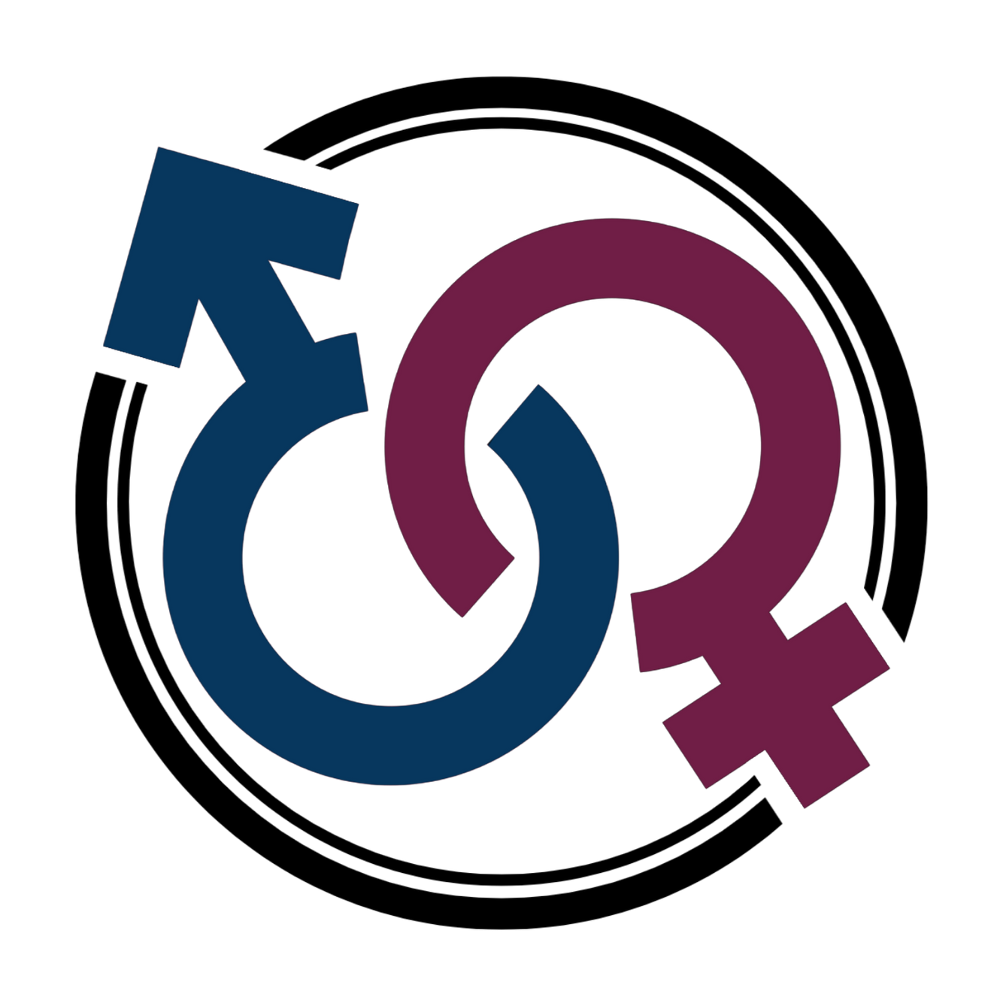

Operational Framework
 ×
×

Explore the Unmuted operational framework
More information about Unmuted and its framework will be shared soon. For now, this page serves as an introduction to the work ahead.
View Unmuted